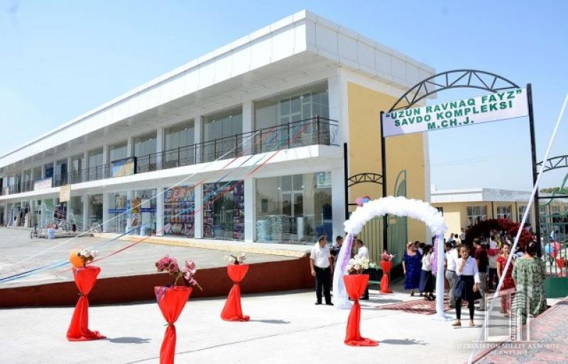
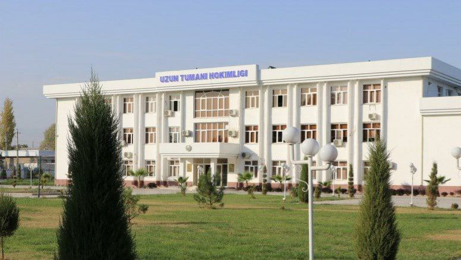
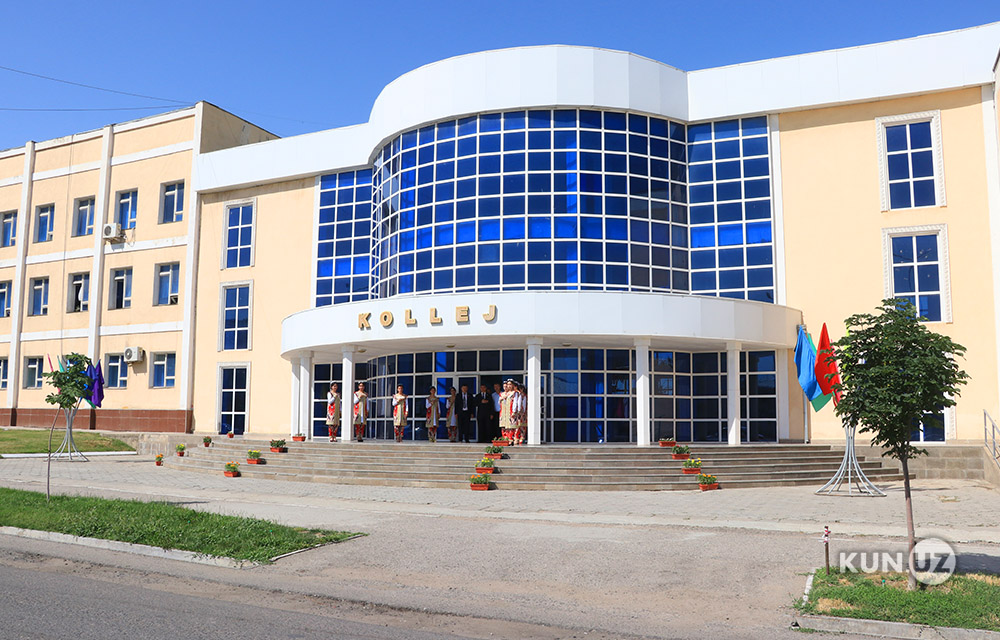
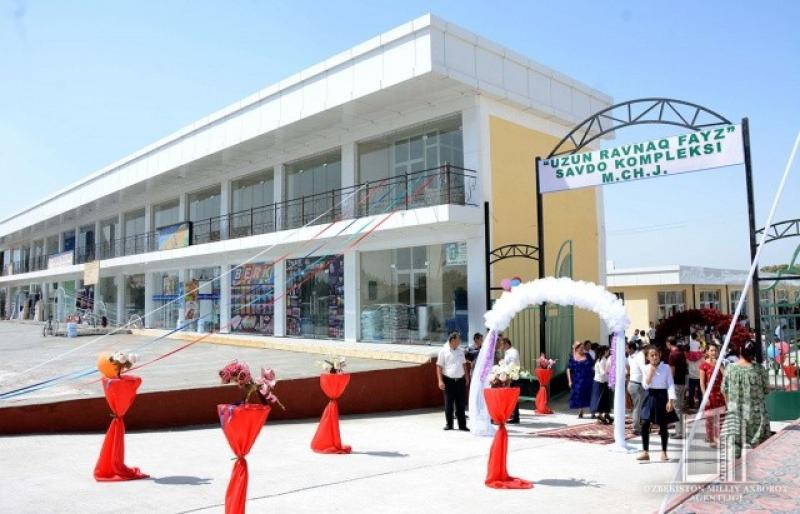
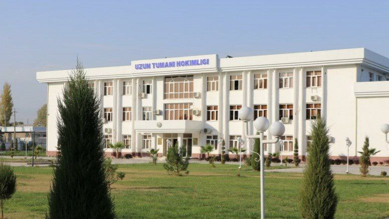
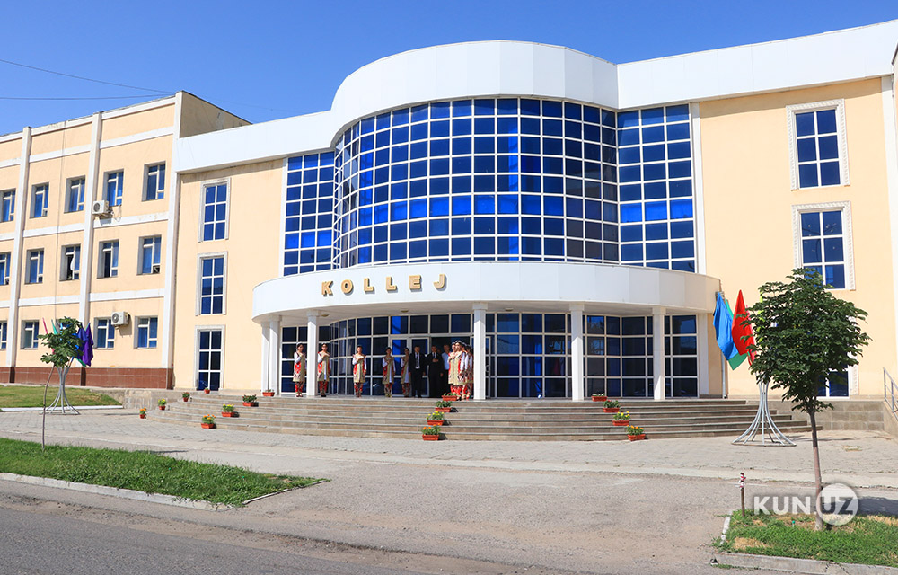
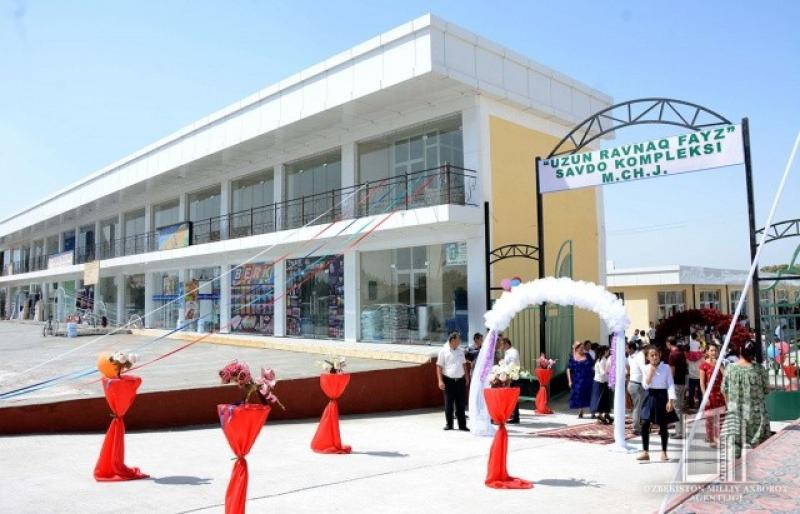
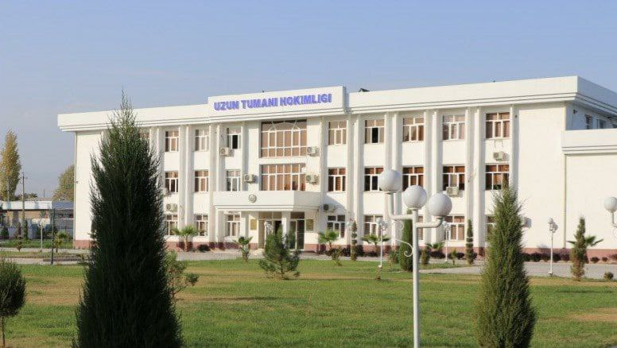
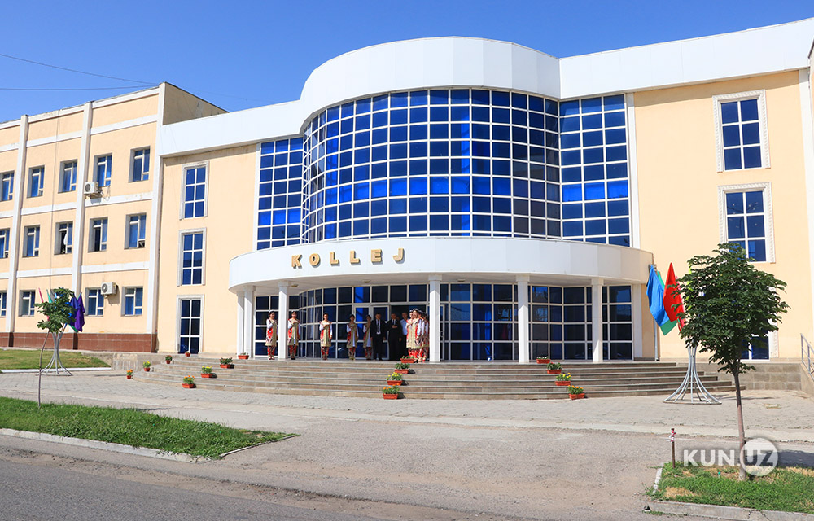
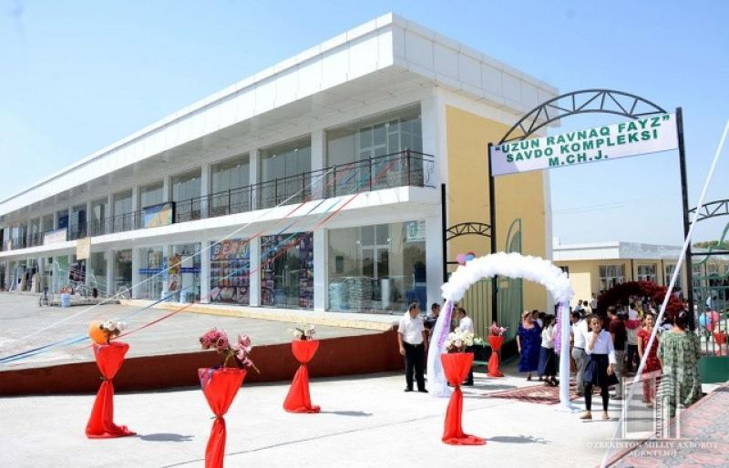
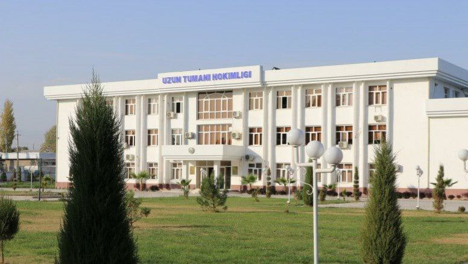
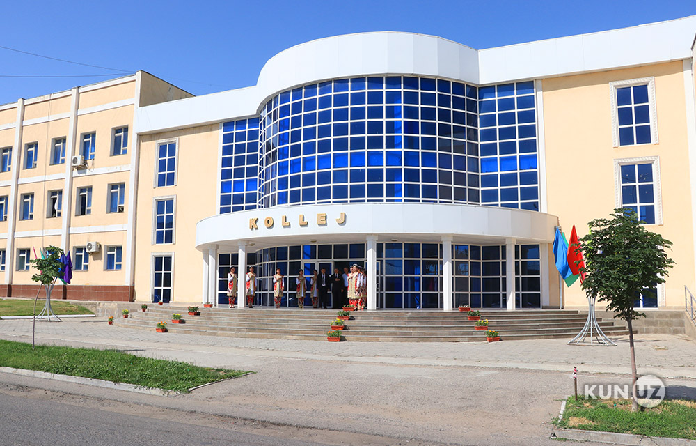
Uzun district is a district in Surkhandarya region, established on January 12, 1942. On October 15, 1959, it was annexed to Saryosi District, and was reorganized on March 29, 1991. Uzun district borders with Sariosia district in the north-west, Tajikistan in the east, south, in the north, Kumkurgan in the southwest, Denov and Shorchi districts in the west. The area is 2.33 thousand km². The population is 183,300 people (January 1, 2023). There are 7 village citizens' assemblies in the district (Bobotog, Joncheka, Akostona, Telpakchinor, Uzun, Fayzova, Khondiza). The center is the city of Uzun. From 2018, Uzun District, New Livelihood Neighborhood was founded on viticulture, at least 10 vine seedlings were planted in every resident's house, and by 2023, many neighborhoods are opening the way to prosperity and entrepreneurship. This contributes to the further development of the district. Population: mainly Uzbeks (60%), Tajiks (35%), as well as Russians, Tatars, Kazakhs, Turkmens, Koreans and other nationalities. The average population density is 56 people per 1 km².[1]